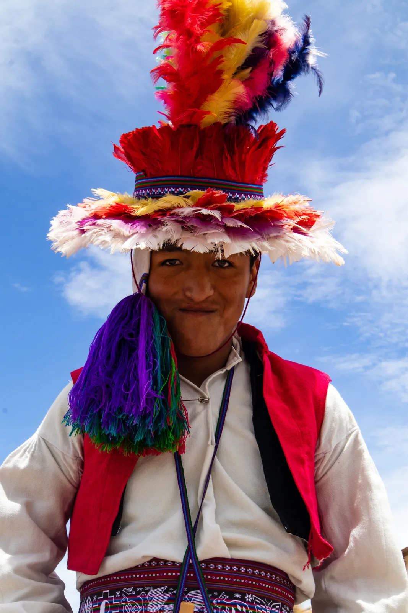

por Karina Coutinho

Fotografia
Galeria
Serviços
-
01
Ensaios
Retratos com luz natural, individuais, em casal ou em família. A gente escolhe o lugar junto: casa, rua, cerrado, onde você se sentir à vontade.
Pedir orçamento -
02
Eventos
Festas, festivais, formaturas e encontros. Cobertura do começo ao fim, com foco nas pessoas e no clima de quem estava lá.
Pedir orçamento -
03
Casamentos
Cerimônia, família, detalhes e o casal no fim da tarde. Registro espontâneo de um dia que só acontece uma vez.
Pedir orçamento -
04
Still de set & making-of
Para produtoras, curtas, longas e videoclipes: fotos de cena e de bastidores para divulgação, imprensa e festivais.
Pedir orçamento
Sobre
Fotografo gente do jeito que ela é: com a luz do lugar, o suor da festa e o riso fora de hora.
Sou Karina Coutinho, fotógrafa em Campo Grande/MS. Assino como fractalume. Trabalho com ensaios, eventos, casamentos e still de set, quase sempre com luz natural e pouca pose.
Vamos
conversar?
Conta o que você tem em mente, a data e o lugar. Eu respondo com o orçamento.
Orçamento pelo WhatsApp (67) 99237-9876- E-mailkarina.coutinho@ufms.br
- Instagram@fractalume
- BaseCampo Grande/MS — atendo também fora da cidade